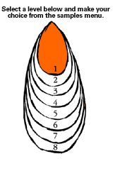
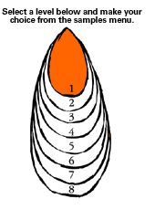

| Level
1: In Role – Pet Problems
PLANNING AND ASSESSMENT
Planning
Possible contexts include: Teacher In Role beginnings [tip]
My pet dog is unsuited to the property: [tip]
- Keeps the neighbours awake
- Runs away
- Is destroying the property
- Brings home other people's property
The person (teacher in role) needs advice about a cage or food,
or taking care of a new pet. The pet shop experts may provide
advice or create the cage out of old cardboard boxes.
The person in role wants advice about an unusual pet, for example:
crocodile, snake, axolotl.
The person in role has read about a pet show but has never been
and needs help to prepare a pet for a show. A group of last year's
winners might be able to help by showing what she will need to
do to get the pet ready.
The person needs advice about a pet that is sick. The veterinary
experts can assist making suggestions to help in writing out a
prescription or to create a useful list of ways to help the pet
get better. What happens when the pet comes back next week?
The person has found a stray animal and doesn't know what to do.
Students may suggest an appropriate authority, such as the SPCA
and members of the class may be endowed with the role through a
badge. The phone book may be used to find out the number of the
SPCA and this may lead toan in-role conversation or visit.
Although
a trip to the SPCA is a good idea sometimes it is more valuable
for students to be able to problem solve through an imagined visit.
This learning example uses the convention "Teacher in Role".
One strategy may follow a sequence such as this:
- The teacher will need to explain to the students that he/ she
will be taking a part in the story with them – that they will
be making the story together. Because this may be a somewhat unusual
way of working, it will need to be talked through first with the
students. They need encouragement to "suspend their disbelief".
Young students adopt this way of working very easily because it
is very close to "playing" and because they can enter into imaginative
thinking very readily.
- It may be helpful for the teacher to use a sign in this convention
– perhaps a scarf, a hat, a coat, a clipboard and to say to the
students that:
when the scarf is being worn, the teacher is in role
in the drama and
when the scarf is taken off, the teacher resumes the
usual classroom role.
- Teachers will very probably find that it is still possible to
manage the class from within the role. The students' interest
is heightened when the teacher takes on another role. Their attention
can be more focused and they want the story to continue, so tend
to have high willingness to cooperate to sustain it.
The teacher might introduce this learning example in this way:
The introduction to role
- Teacher tells the class that they will all be in the story
together, including the teacher, and tells class that they will
be people who are, in this case, very knowledgeable about pets
(experts)
Teacher says:
"When I put this scarf on, (or when I'm on this seat) you'll
know that the story has started."
Teacher continues:
"I wonder if you can help me – I've got a problem with my pet."
"I believe you people know a lot about pets, is that correct?"
- This is an invitation for the students to come into the drama
in role themselves. The students are given a role and the style
of questioning encourages participation, it capitalises on students'
natural desire to help and helps them to feel empowered.
The exploration of the problem
The teacher could outline the problem and open it to the students
for their responses
Teacher:
"I've got a dog and he keeps running away."
"Has anyone ever had this happen?"
"Have you got any ideas?"
"Can you help?"
This leaves space for students to draw on their own experiences
and creates a feeling of empathy.
The teacher can use open-ended questions:
"I've got this dog and he's _ _ _ _ _ _ _?" (leaving space for
students to provide possible problems they might know about)
The teacher needs to be aware of slowing the process and encouraging
the students to supply as many ideas as possible before approaching
solutions, for example:
"My dog keeps running away – why does he do it?"
"How is my dog feeling, do you think? What could be wrong?"
"How is my dog going to feel about a new kitten coming into the
house?"
The teacher can feed in hints and encourage students to question
and leaving space for the students to offer suggestions about what
the dog is like, for example:
"Yes, he has got big paws, you're right."
In this way imaginative enrichment can occur. If specific students
appear to be off task or attention is wandering it may be useful
to request their assistance. Phrases like: "[student name] could
you show me what to do when" or "Are you with me?"
Finding a solution
Teacher in Role can draw together suggestions into a list of possible
solutions. Teacher could come out of role to discuss this (taking
off scarf or moving away from chair)
From this point, the possibilities for extending the drama will,
to some extent, depend on what the students have come up with.
The drama could conclude with a list of solutions:
"Why didn't I think of that?"
"I'm off home now – and I'm going to try that fencing idea – thanks
very much!"
This can provide the point at which teacher resumes other classroom
work.
Students should be allowed to derole through speaking to the teacher
as themselves or through a simple physical cue such as turning around
to become themselves once again.
Small groups could role play, for example:
- Building the run for the dog. The teacher can move around groups
and let them demonstrate and talk about the specific tasks they
are doing. In this exercise students could use their bodies to
represent important parts of the cage.
- Caring for the pet and preparing the pet for a show, for example:
washing, grooming, brushing, dipping, checking teeth and eyes,
weighing.
The whole class could cooperatively make the fence, or the surroundings
for the dog, the things to chase, chew, or hide in, etc.
Reflective questions
During or after the teacher in role activity the teacher might
ask some or all of the following questions to assist students to
reflect on the work they have just completed.
Out of role questions
What sort of person do you think the pet owner is?
Do you think he's a nice person?
What did he say to make you think that?
How did he sit or stand to make you think that?
Do you think he should have a pet?
If you were his pet would you like him?
Are the people who he is talking to helping him very much?
What help have they given?
What should/ might they do next to help?
If there was someone who didn't want to help what sort of things
might they say or do?
What do you think might happen next to the pet?
What would you like to do next in the drama?
In role questions
I don't quite understand what you mean by holding him gently can
you show me?
I'm not very good at remembering can you show me how to do that
so I remember?
Are you very good at caring for pets?
How did you learn so much about caring for pets?
What are people who are good at looking after pets like as people?
Assessment
Assessment activities could include:
- Students can show acceptance of role by answering or asking
in role as expert
- Teacher can observe how student participates in role play which
develops from the drama
- Teacher can observe how readily student accepted Teacher in
Role convention in discussions after, for example, about the sign for
role.
|

 
